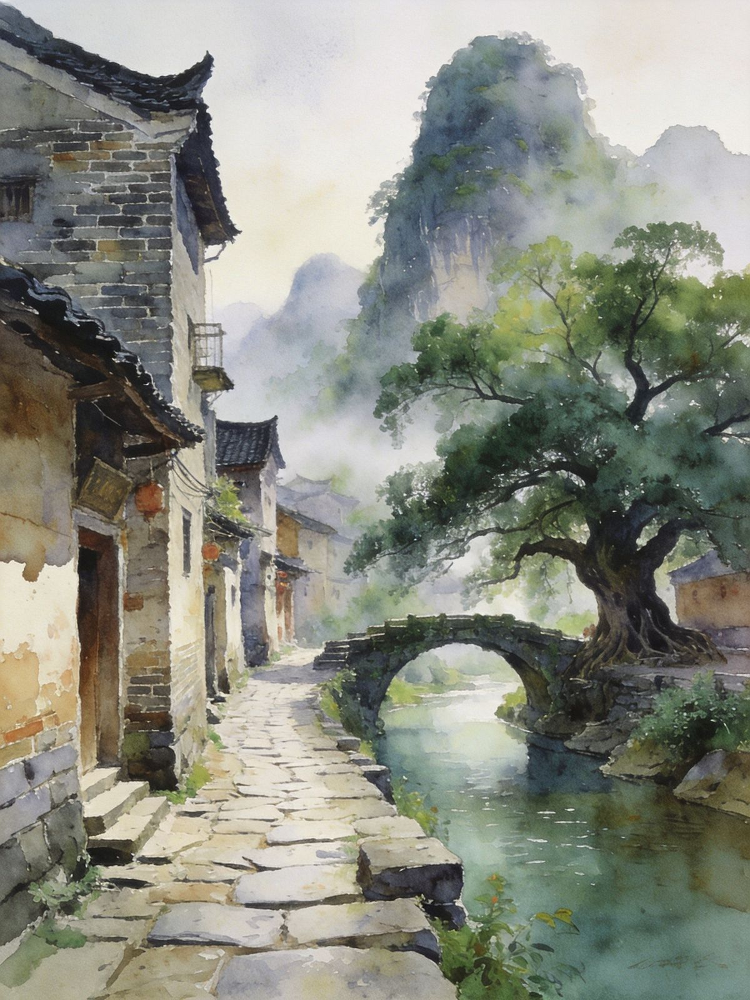
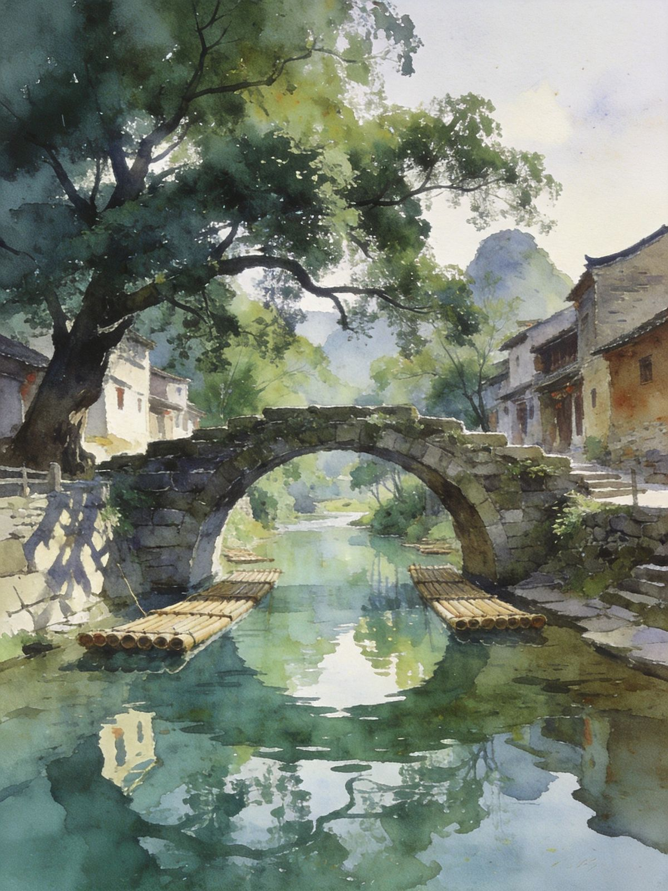
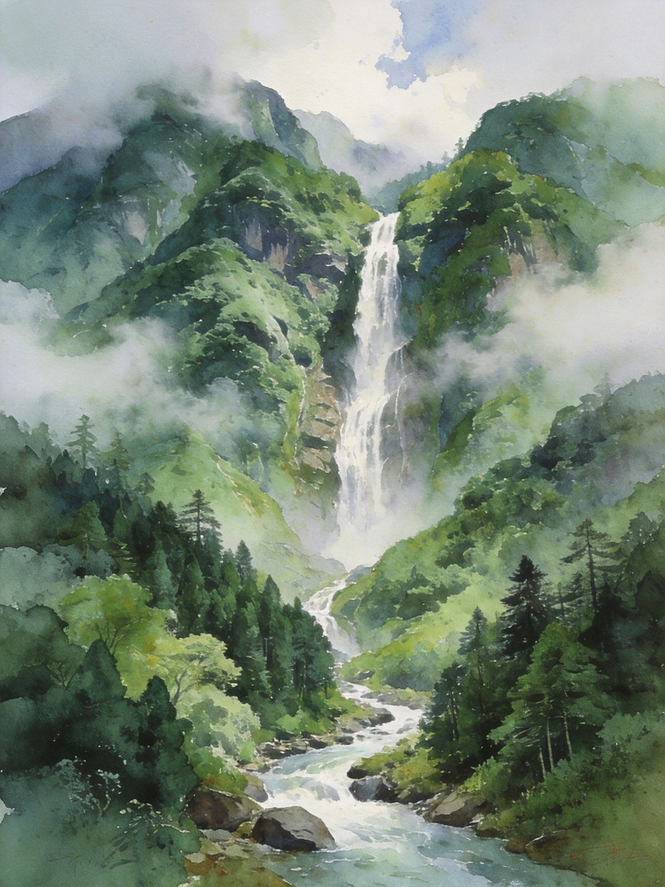

封面
总览
行前·交通·住
黄姚古镇 · Day1
晨昏摄影 · Day2
黄姚古镇
姑婆山
贺州美食
喀斯特田园
避坑提示

HEZHOU · HUANGYAO
贺州·黄姚
千年山水古镇 · 姑婆山云雾 · 喀斯特田园
4A古镇
青石板巷
带龙桥
客家围屋
姑婆山
广西 · 贺州
A5 口袋手册
· 2-3天
1
/ 10
贺州·黄姚
动线总览
2–3 天怎么玩
Route Overview
2天
精华
黄姚古镇 + 晨昏摄影
古镇慢逛住一晚，看灯笼与晨雾
3天
深度
+ 姑婆山森林氧吧
瀑布群 + 高山草甸，天然森林浴
TIP
黄姚古镇被称为
「中国最美的十大古镇」
之一，青石板巷、客家围屋、百年古桥与古榕，被群山环抱，诗画般静谧。
姑婆山
则是天然氧吧森林，适合组合同游。
TIP
古镇
石板路为主
，穿舒适平底鞋；清晨与傍晚人少时最有味道，建议住一晚看晨昏。
2
/ 10
贺州·黄姚
行前准备
出发前，记住
3 件事
Before You Go
🚄 怎么去
高铁
：贺州站，南宁/广州/桂林动车可达
去黄姚
：市区→黄姚约70km，自驾约1.5h，或班车/拼车
去姑婆山
：距市区约30km，自驾/公交约40min
📅 最佳季节
3–5月
春雾迷蒙，古镇如画
9–11月
秋高气爽，色彩丰富
夏季多雷雨，进山注意天气
🏨 住哪
体验晨昏意境选
黄姚古镇内民宿
近山水游乐选
贺州市区/姑婆山脚
TIP
古镇不大，
半天到一天可逛透
；慢走更有味道，清晨光线最柔。
3
/ 10
贺州·黄姚
Day1 · 黄姚古镇
Day1 · 全天
青石板巷 · 千年古韵
带龙桥
→
石板街
→
古戏台
→
镇外山丘俯瞰
→
古镇夜宿
🏛 古镇精华
带龙桥
镇标石拱桥，倒影入画
石板街/迎秀街
明清青石板主街
仙人古井、古榕、古戏台
登镇外山丘俯瞰
古镇全景
🌙 夜色
晚上古镇
灯笼与夜色
，住一晚看晨昏
清晨光线最柔、游客最少
TIP
打卡：
带龙桥、仙人古井、迎秀街、古宅豆豉坊
是黄姚经典镜头。

带龙桥
青石板巷
4
/ 10
贺州·黄姚
Day2 · 晨昏摄影
Day2 · 摄影日
晨雾 · 光影
早起拍晨雾古镇
→
周边田园/石山徒步
→
返程/姑婆山
📷 晨昏摄影
晨雾
中古镇如诗，带龙桥倒影最美
傍晚暖光洒在
青石板与古榕
上
古镇周边
喀斯特田园与石山
徒步
🗺 返程/顺游
上午拍完晨雾后返回市区
可选：加半天
姑婆山森林浴
TIP
清晨与傍晚是古镇
最出片
的时刻，住古镇内步行即达，别睡过头。
5
/ 10
贺州·黄姚
黄姚古镇
诗画
· 千年古镇
Huangyao Ancient Town
🏛 必逛
带龙桥
镇标石拱桥，倒影入画
石板街/迎秀街
明清青石板主街
仙人古井、古榕、古戏台
客家围屋与豆豉作坊
，黄姚豆豉是名产
TIP
古镇不大，
半天到一天逛透
；慢走更有味道。
清晨光线最柔
、游客最少。
带龙桥
千年古巷
6
/ 10
贺州·黄姚
姑婆山
桂东第一峰
· 天然氧吧
Gupo Mountain
🌲 姑婆山国家森林公园
桂东第一峰
，森林覆盖率高，天然氧吧
瀑布群
（二道瀑/九龙瀑）、高山草甸
夏天避暑，秋冬可观云海，徒步/亲子皆宜
TIP
山上气温比市区低
约5–8℃
，带薄外套；瀑布路段湿滑
防滑鞋
。多雷雨天气，关注预报再进山。

高山飞瀑
山水
7
/ 10
贺州·黄姚
贺州美食
贺州味道
· 客家酿与豆豉
Eat · Local
TIP
黄姚豆豉
是古镇名产，豆豉蒸鱼/拌饭香；客家菜偏
家常、咸鲜
，下饭。
🫘
黄姚豆豉
古镇名产，豆豉蒸鱼/拌饭香
🥢
竹笋酿、豆腐酿
客家风酿菜
🍵
油茶
桂北特色，驱寒暖胃
🍡
粉利、艾粑、三华李/梅子
地方小吃与鲜果
TIP
古镇内
小吃摊+餐馆齐全
，价格公道；
客家菜偏家常咸鲜
，下饭。
8
/ 10
贺州·黄姚
喀斯特田园
山水之间
· 喀斯特田园
Karst Countryside
🏞 古镇周边
黄姚被
群山环抱
，喀斯特石峰林立
田园徒步
，稻田与石山相映成画
自驾可深入
乡村小路
，别有洞天
🌄 拍摄点位
镇外山丘可
俯瞰古镇全景
清晨
晨雾+炊烟
，如诗如画
傍晚夕照洒在梯田与石峰上
TIP
田园与古镇结合是
黄姚最大魅力
，值得留出半天慢慢逛。
9
/ 10
贺州·黄姚
避坑提示
看清这些，玩得更安心
Stay Safe
👨👩👧
节假日人多
古镇拥挤，尽量选工作日/清晨
🪨
石板路湿滑
雨天穿防滑鞋，慢行
⛈
姑婆山多雷雨
关注天气预报再进山
🎫
门票住宿提前订
节假日房源紧
⛰
返程留足时间
黄姚到市区较远，预留返程
⚠️
紧急
紧急拨 110 / 120；消费纠纷拨 12345
贺州黄姚「WorldStip」祝你玩得开心 🏮
10
/ 10
WorldStip · 贺州 · 黄姚古镇 / 带龙桥 / 姑婆山 / 客家围屋 / 黄姚豆豉 · 数据以景区当日公示为准
Insta360
记录美好
记录美好生活
相机指南 · CAMERA GUIDE